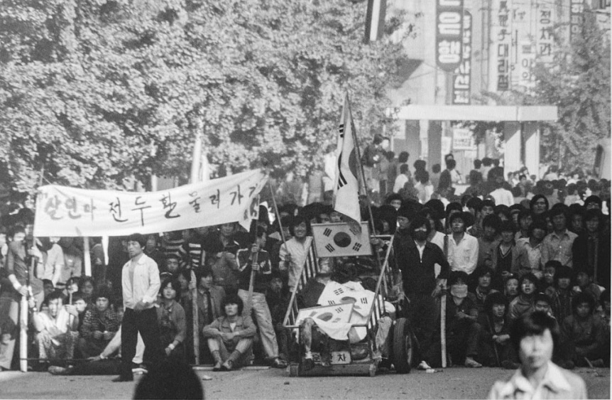
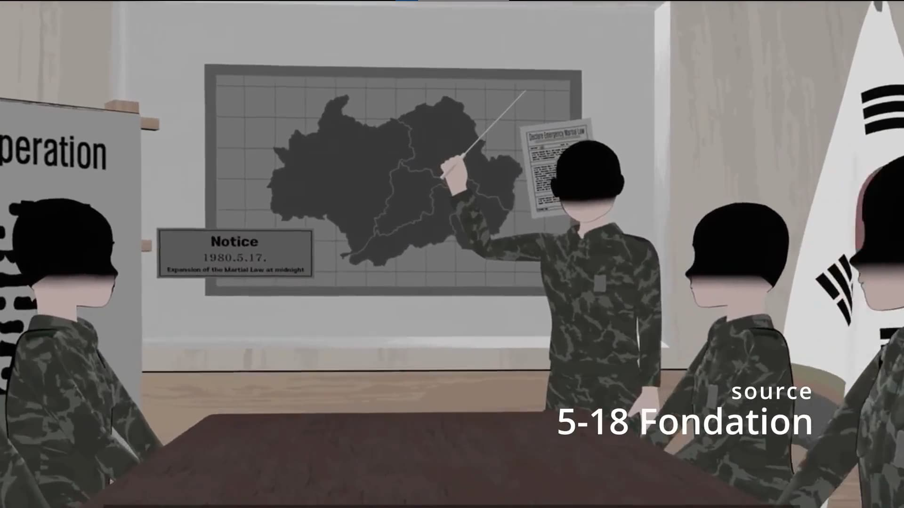

De quelle manière le soulèvement de Gwangju est-il influencé par l’évolution des nouvelles formes de médias porteurs des images ?
À noter
Le soulèvement de Gwangju est également profondément influencé par l'évolution des nouvelles formes de médias porteurs d'images. Ces médias ont façonné la perception et la commémoration de cet événement tout comme l'éducation.

1980년 5월 광주에서 Mai 1980 à Gwangju

Les réseaux sociaux
Au-delà de la presse imprimée et numérique, les réseaux sociaux participent à la transmission de la mémoire. Les plateformes comme Facebook, Twitter, Instagram et YouTube permettent aux utilisateurs de partager des souvenirs, des photos, des vidéos et des articles sur le soulèvement de Gwangju. Elles facilitent une diffusion rapide et large de l'information, permettant une sensibilisation et une discussion plus larges. Les hashtags, les vidéos commémoratives et les témoignages personnels créent une communauté en ligne de personnes engagées dans la préservation de la mémoire historique. Des hashtags comme #GwangjuUprising maintiennent le souvenir dans la conscience publique.
Sites web et archives numériques
Le site du Musée de la Démocratie de Gwangju offre un accès à une multitude de ressources historiques, y compris des photographies, des vidéos, des témoignages et des documents officiels. Les archives numériques permettent ainsi une recherche approfondie et une exploration individuelle de l'événement, facilitant l'apprentissage autodidacte et la découverte personnelle de l'histoire. On parle désormais également de cyber-pèlerinage, où des sites comme cyber.518.org offrent une nouvelle forme de célébration et de témoignage des proches des victimes. À travers des tombes numériques et des espaces de commentaires spécifiquement dédiés, ces espaces permettent la convergence de plusieurs besoins : le deuil, la conservation de la mémoire, mais aussi sa transmission.
Audiovisuel
Le film A Taxi Driver de 2017 apporte un nouveau souffle au regard porté sur le soulèvement. Ce film raconte l'histoire d'un chauffeur de taxi qui aide un journaliste étranger à documenter les événements. Il a joué un rôle important dans la sensibilisation du public, en particulier parmi les jeunes générations, en offrant une représentation dramatique et émotionnelle des événements. En effet, les films et documentaires apportent une perspective humaine et visuelle qui aide les spectateurs à comprendre et à compatir avec les événements historiques. Ils rendent l'histoire accessible et mémorable, atteignant souvent un public plus large que les textes écrits seuls. Pour certains, la familiarisation avec le soulèvement passe uniquement par les médias comme les clips musicaux de kpop, les webtoons ou encore les films.
Réalité virtuelle, réalité augmentée et IA
Des projets éducatifs utilisant la VR et l'AR recréent les événements de Gwangju, permettant aux utilisateurs de vivre une simulation immersive de ce moment historique. Ces technologies rendent l'histoire plus interactive et engageante, surtout pour les jeunes générations. Elles offrent une expérience éducative unique qui peut approfondir la compréhension et l'empathie.
La montée de l'IA offre de nombreuses opportunités pour enrichir la manière dont la jeunesse coréenne traite les images historiques, mais elle peut également participer à la désinformation. D’une part, en améliorant l'accès, la compréhension et l'interaction avec ces images, l'IA peut aider à préserver la mémoire collective et à éduquer les générations futures sur des événements cruciaux comme le soulèvement de Gwangju. D’autre part, avec des phénomènes comme la prolifération des images truquées et des deepfakes, les nouvelles générations prennent plus de distance avec le lien aux images, qui peuvent ne plus sembler être une source fiable du rapport au passé et donc contribuer au désintérêt de la jeunesse coréenne.
L'évolution des nouvelles formes de médias, y compris les films, les médias sociaux, la réalité virtuelle et les archives numériques, joue un rôle essentiel dans la commémoration et la compréhension du soulèvement de Gwangju. Ces médias rendent l'histoire plus accessible, engageante et pertinente pour les jeunes générations, assurant que l'événement reste vivant dans la mémoire collective. L'éducation, la participation active aux commémorations et l'influence de la culture populaire jouent également un rôle. Cet événement continue de servir de symbole puissant pour les luttes actuelles en faveur de la démocratie et des droits humains en Corée du Sud.